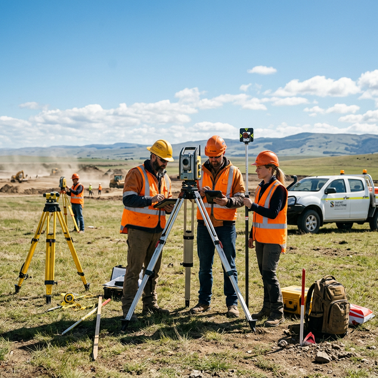

Construction Surveys
Building Setting Out Survey
Precise on-site marking of building footprints, column positions, setback lines, and structural elements to ensure construction exactly matches approved architectural plans.
Overview
What is a Building Setting Out Survey?
Building setting out (also called staking out or construction layout) is the process of transferring the exact positions and dimensions from architectural drawings to the actual site. This involves marking building corners, column grid lines, floor levels, setback distances, and other critical construction reference points using Total Station and levelling instruments.
Why is it Required?
Without accurate setting out, a building could be constructed in the wrong location, at wrong orientations, or violating setback regulations. Setting out errors can result in expensive demolition, structural compromise, or legal non-compliance with building permits. It is the critical first step that ensures every subsequent construction activity is correctly positioned.
Who Needs it?
Residential builders, commercial developers, industrial construction companies, infrastructure contractors, real estate developers, architects ensuring their designs are faithfully built, and any construction project requiring precise on-site positioning.
Key Benefits
- Accurate Measurements — ±5mm tolerance for column placement and building corners
- Legal Compliance — Setback distances verified against approved building plan
- Faster Project Execution — Correct first-time placement avoids costly rework
- Reduced Construction Errors — Prevents costly structural alignment mistakes
- Government Approval Support — Setting out certificate provided for plinth inspection
Our Survey Process
- 1
Site Visit
Review of approved building plans and site visit to establish control benchmarks and check existing boundaries.
- 2
Data Collection
Importing approved plan coordinates into Total Station and verifying site control framework.
- 3
Survey Execution
Physical marking of building corners, column positions, setback lines, and reference levels.
- 4
Analysis
Verification of all marked positions against approved plan coordinates to confirm accuracy.
- 5
Report Preparation
Preparation of setting out drawing and certification of compliance with approved plan.
- 6
Client Delivery
Handover of setting out drawing, benchmark description, and setting out certificate to client.
Deliverables
- Setting Out Drawing
- Column Coordinates
- CAD Files
- Benchmark Description
- Setting Out Certificate
Frequently Asked Questions
What is building setting out?
Building setting out transfers the precise positions of building columns, walls, and corners from design drawings to the actual construction site using survey instruments.
When should setting out be done?
Setting out should be completed before any excavation or foundation work begins. It is the very first construction activity after site clearance.
How accurate is building setting out?
We achieve ±5mm accuracy for column positioning and ±10mm for building outline marking, which is well within construction tolerance requirements.
Do you check setback compliance?
Yes. We verify all setback distances from property boundaries as per the approved building plan and local authority regulations before marking.
Do you provide ongoing survey support during construction?
Yes. We provide complete construction survey support including floor-level monitoring, column alignment checks, and as-built surveys at each stage.
Ready to Set Out Your Building?
Contact our construction survey experts for precise building setting out services.

Planning a survey or setting-out job?
Share your site location, area and drawings. Our team will advise on the right survey or marking method.